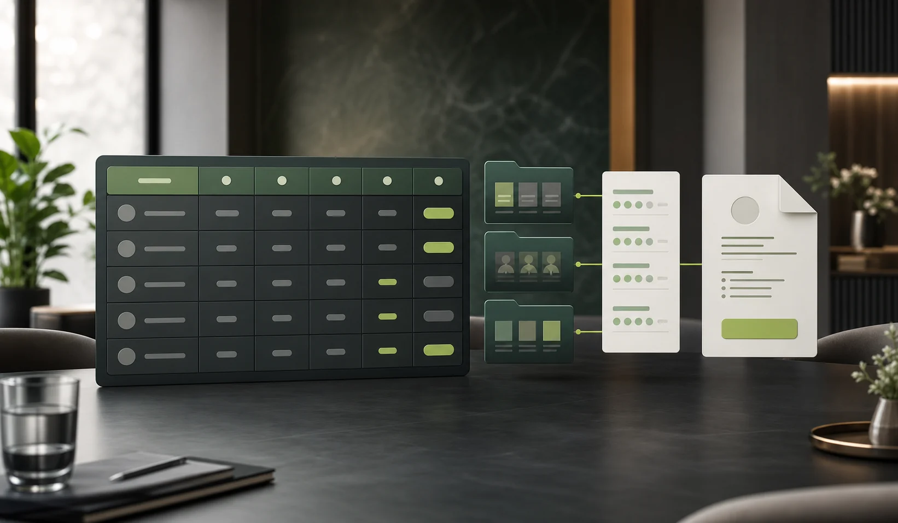

01 / HIRING OS
Run the entire hiring cycle.
Roles, candidates, pipeline stages, interviews, scorecards, and offers move together in one workspace.
Active roleProduct leadership
Valases turns scattered hiring motion into one clear operating system, so the right people move forward with confidence.
Great hiring teams do not need another inbox. They need a shared point of view on what is happening, what matters, and what happens next.
How the system works ↗From an approved role to an accepted offer, Valases keeps the work, evidence, and decisions in one clear operating system.
Roles, candidates, pipeline stages, interviews, scorecards, and offers move together in one workspace.
Build structured MCQ, coding, spreadsheet, accounting, tax, and case-based assessments.
Bring assessment results, structured interview evidence, and compliance checks into the decision.
Prepare compensation, release approved offers, and retain signed copies.
Every surface is designed for the person using it, while the organization keeps one source of truth from role opening to signed offer.
A calm command center for high-volume coordination and high-stakes decisions.
Build work samples that reflect the role, then use AI-assisted first-pass feedback to review the evidence with context.
A focused, respectful assessment journey with clear instructions and secure progress.
Identify the variance that needs investigation before close.
Valases connects the complete hiring journey without flattening it. Each product is purpose-built for the decisions, evidence, and people it serves.
One organization-scoped workspace carries a role from requisition to accepted offer, with ownership, evidence, and next actions visible at every stage.
Define job codes, departments, locations, required skills, hiring plans, responsibilities, and a clear role description before the pipeline opens.
Keep consent, contact details, structured skills, resume summaries, and every role application connected to one candidate record.
Move applications through defined stages with explicit ownership, transition checks, duplicate-action protection, and a visible decision history.
Organize role requirements, matched evidence, unverified skills, and limitations into a reviewable summary without automatic rejection.
Schedule role-linked interviews and capture comparable ratings, recommendations, and job-relevant evidence in a shared scorecard.
See active roles, stage movement, upcoming interviews, outstanding reviews, offer status, and the work that needs attention next.
Create role-relevant assessments that combine knowledge, execution, timing, integrity signals, and reviewable scoring evidence.
Place candidates inside practical workspaces instead of asking them to describe what they could do.
Control how time shapes the exercise while keeping the experience clear for candidates.
Use AI-assisted observation transparently, with candidate consent and mandatory human interpretation.
Combine deterministic scoring with AI-generated first-pass feedback, then keep reviewer edits and reasons visible.
A separate candidate surface keeps every assessment focused, private, and clear from the invitation through final submission.
Role-linked access, expiration, resend, and revoke controls keep each assessment delivery accountable.
Instructions, duration, required tools, privacy notice, consent, and proctoring expectations appear before the clock begins.
A dedicated assessment workspace keeps the task, evidence, timer, save state, and navigation easy to understand.
Autosave and recovery protect progress, while duplicate-safe submission prevents uncertainty at the final step.
Review the source material and record the evidence that supports your conclusion.
Bring screening, assessment, interview, compliance, and compensation into one controlled path to a defensible decision.

Valases is being built for organizations that need hiring speed without giving up governance, explainability, or regional control.
Tokyo and Mumbai deployment foundations keep organization data assigned to its approved region.
Owners, recruiters, hiring managers, interviewers, payroll, and viewers see only the work they need.
Company SSO workflows support controlled organization access and administrator provisioning.
Structured evidence, compliance checks, and decision events create a record teams can explain.
Connect the calendars, meetings, collaboration, storage, payments, and data services your teams already trust. Valases keeps the hiring record coherent while work moves across the tools around it.
Explore integrations ↗Valases is designed for the moments between the milestones: the handoffs, the questions, the quiet decisions that shape a team.
Align the team on the brief before the first candidate ever arrives.
“The best hiring systems do more than move people through. They help teams see clearly enough to choose well.”
Tell us what you are building. We will show you what a clearer hiring system could look like inside it.
Book a product briefing ↗